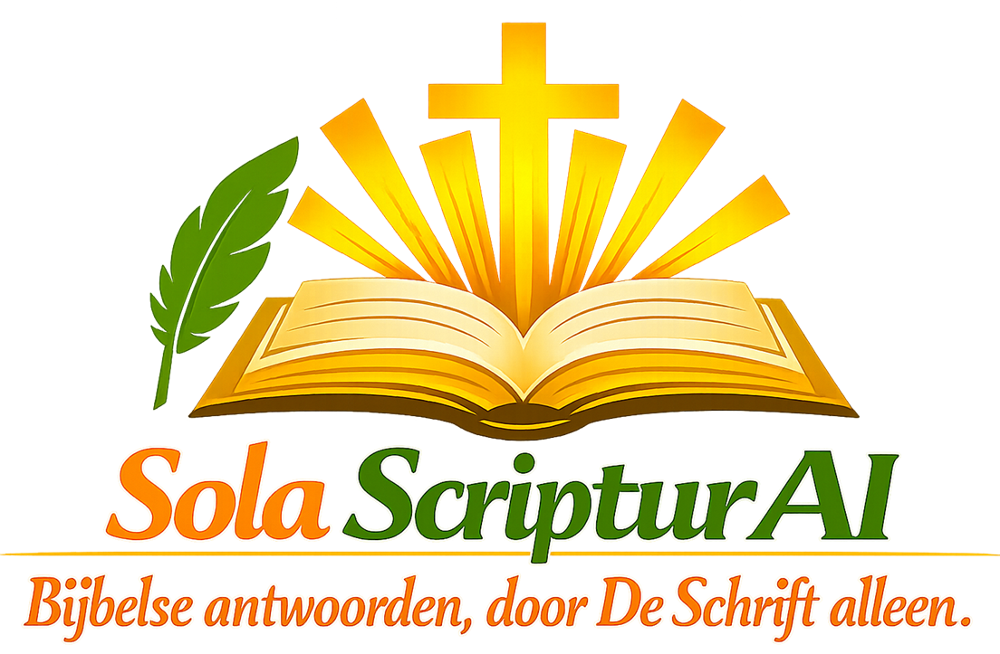

Download in de App Store Vrije giftSola ScripturAI is een moderne Bijbel‑app die kunstmatige intelligentie inzet om antwoorden te geven — gebaseerd op De Schrift (Herziene Statenvertaling). De app combineert eeuwenoude Schriftgetrouwheid met hedendaagse technologie, zodat gebruikers zuivere, contextuele inzichten ontvangen rechtstreeks uit de Bijbel.
Sola ScripturAI fungeert als een soort “Google voor de Bijbel”: je stelt een vraag, en het AI‑model zoekt, begrijpt en antwoordt enkel op basis van verzen uit De Schrift. Elk antwoord verwijst naar de relevante passages, zodat je zelf kunt nagaan wat De Schrift zegt.
De missie van Sola ScripturAI is om de kracht van technologie te gebruiken om mensen dichter bij het Woord van God te brengen. Gebouwd op het principe van “Sola Scriptura” — De Schrift alleen — en versterkt door de letterlijke trouw van de Statenvertaling, biedt de app een zuivere, betrouwbare bron van Bijbelse kennis.
“Bijbelse antwoorden, door De Schrift alleen.”